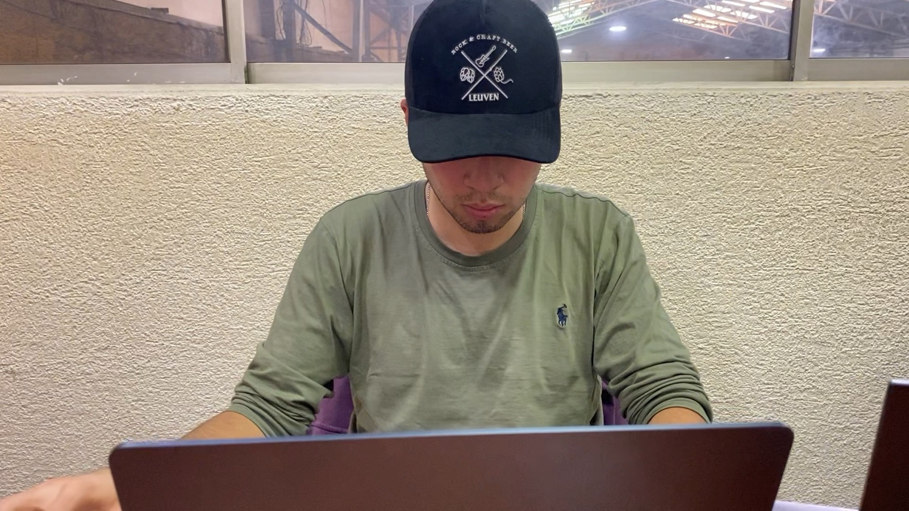
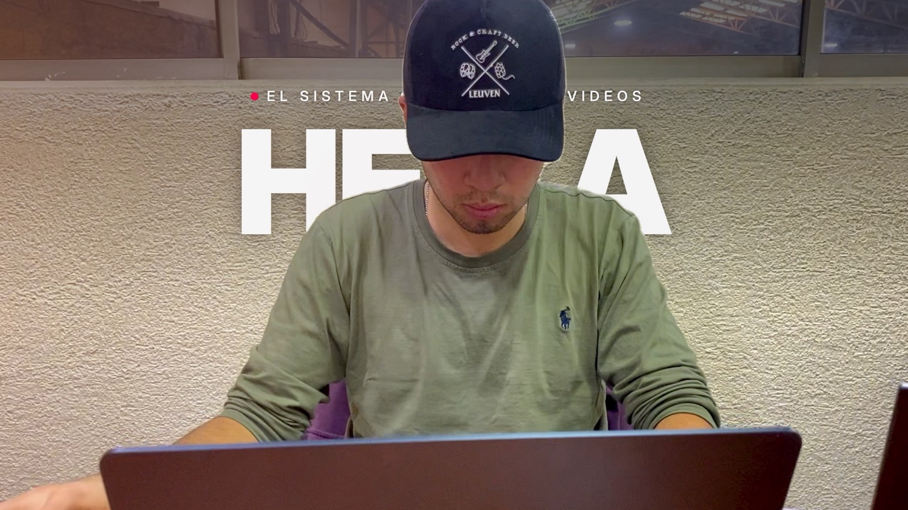
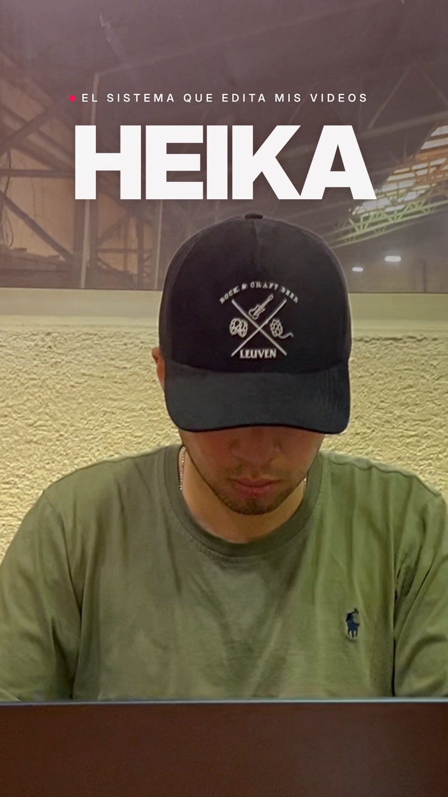

HEIKA
- Black
- Títulos. Mayúsculas, interletra −30. Uno por video, grande, detrás del sujeto.
Cómo se ven los videos de Max
Vlog cinematográfico moderno: letra grande y bold, color vivo, cortes al ritmo, y Max hablando con calma. Todo lo que ves acá está renderizado en After Effects por el sistema, con las tomas reales de la oficina.
Inter Display: la familia que más se parece a la de Apple, pero libre para videos (SF Pro no se puede usar fuera de apps de Apple). Tres pesos, cada uno con un trabajo.
HEIKA
lo que nadie
te muestra
EL SISTEMA QUE EDITA MIS VIDEOS
Los colores de Heika, aplicados al video. La imagen va viva: piel cálida, sombras frías, saturada sin quemar. Arrastra para ver la toma antes y después.


AntesDespuésLo que más se repite en tus referencias de «para claude». Cada pieza se arma una vez como plantilla de After Effects y después el sistema la usa sola en cada video.
El título se arma letra por letra y Max pasa por delante.
Texto gigante que aparece al ritmo exacto de la voz, como «float 2.0».
Un giro rápido de cámara que corta a la toma siguiente sin que se note el corte.
Algo oscuro cruza cerca del lente, tapa todo y destapa otro lugar.
Los primeros segundos con tomas de 2 cuadros, al golpe de la música.
Una capa chica fija: lugar, hora y día. Hace reconocible cada video al toque.
Lo que aprendimos de la prueba de la oficina y de tus referencias.
Se graba una vez y salen los dos. El horizontal es el original; el vertical es un recorte del mismo 4K, sin perder calidad.
iPhone en horizontal, Max al centro del cuadro, con aire arriba para el título.
YouTube y los vlogs largos de 20–30 minutos. Es el original.
Reels y TikTok. Recorte del centro del 4K (2160 px de alto, sobra).

Barra de la appBotonesNombre y texto